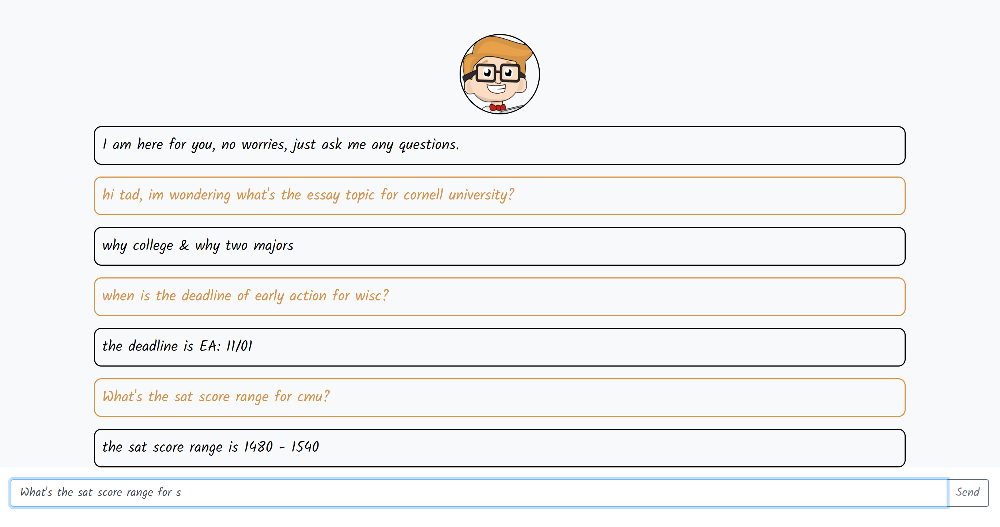
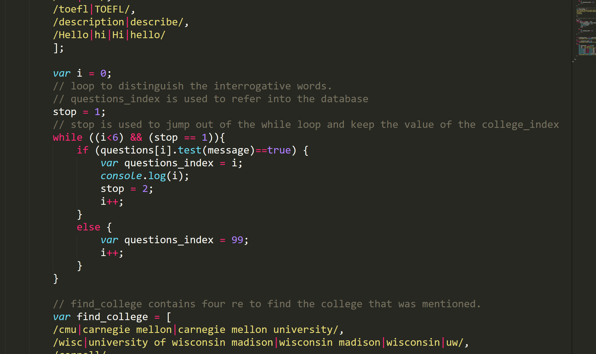
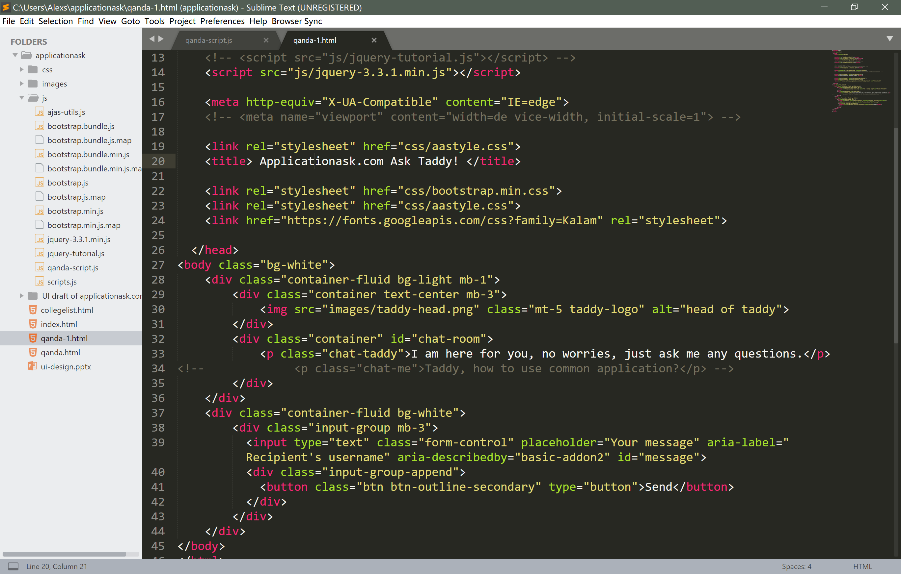

Final Part of the Colloquy Capstone Project.
Check out my about page to see the reason and goals behind this project.
A fair amount of coding and an understanding of web-development are needed. Also, I need to talk with my fellow students and the college counsiling teachers to understand what they needed the most during the applicaiton process.
Check out my three updates: 1. update to my project's goal 2. update the UI Design of applicationask.com 3. screen-shots of my codes
Til now (04.07), I have finished most of the functionality of the Q & A page. It is able to provide lots of basic information of different universities, including SAT range, Essay topics, school description, application deadline, and etc. It has a slight difference in UI with my original design.
The code behind the webpage:
 Building a website on one's own and be a full-stack developer is exhausting as it requires knowing different sets of tools so as to design / build / serve / test the website.
However, having the ability to quickly turn your idea into a testable product and try it in the reality is worthy of all those efforts. It helps you to put your product into perspectives and learn its advantages / disadvantages quickly.